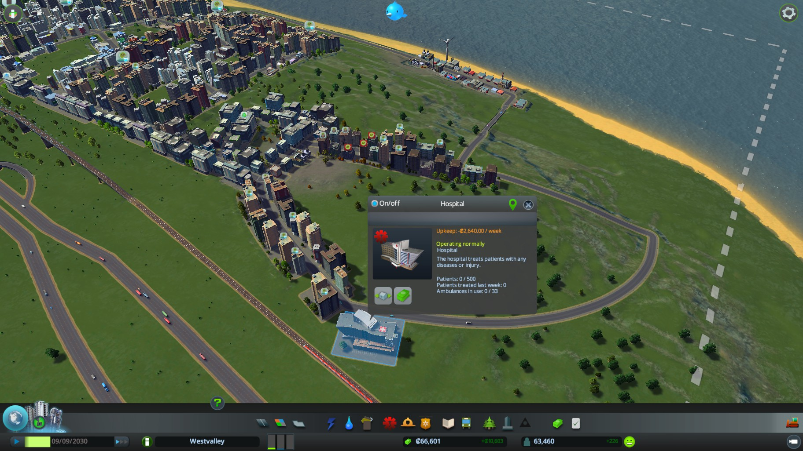
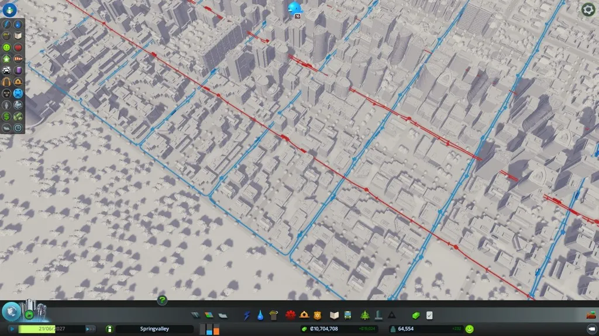
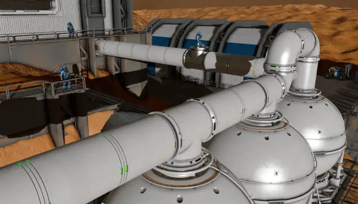
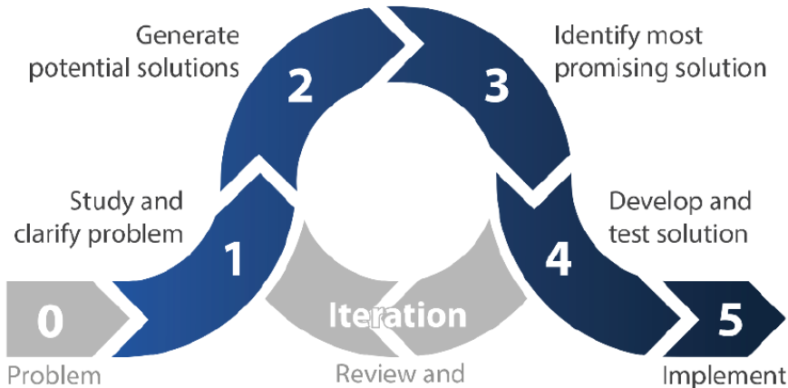
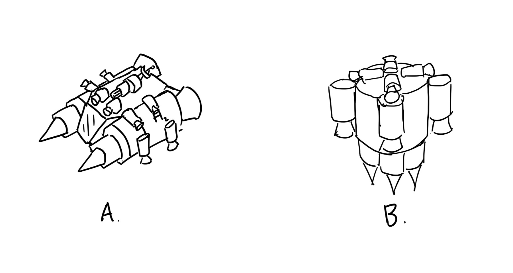
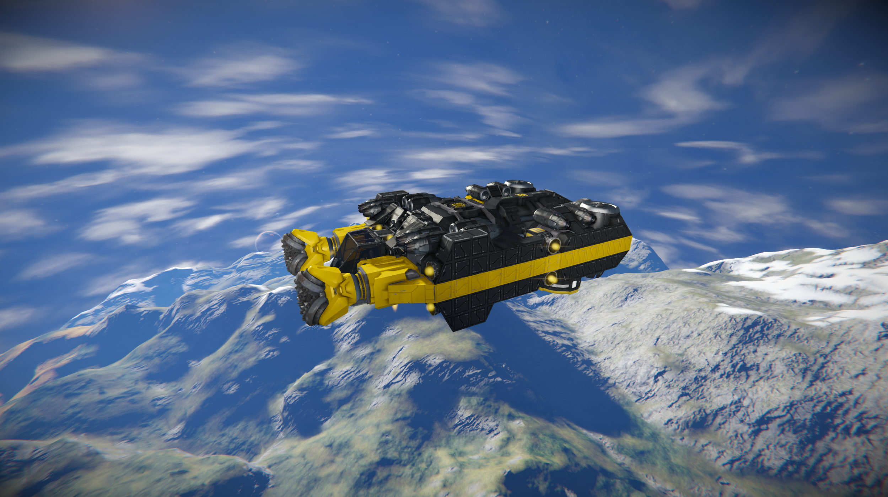
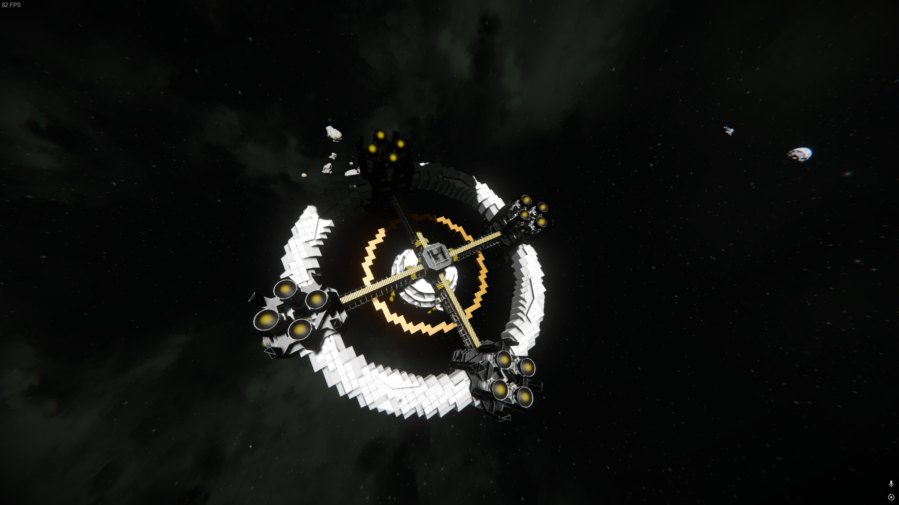

Max Guo Website
SIMULATIONS
Below is a list of my favourite simulations, listed in no particular order. Each entry highlights what I believe, makes the simulator exceptional, along with the skills it involves or helps develop.
Cities: Skylines

Sample City in Cities: Skylines
ABOUT
Cities: Skylines is my go-to simulation to unwind after a day of admiring local architecture on a walk. I’ve always held a deep admiration for humanity’s ability to construct sprawling cities with intricate transportation networks. Although majority of real-world cities are built atop pre-existing infrastructure leading to major traffic issues down the line (looking at you, Downtown Vancouver), there is a certain charm in observing city history by the layout of roads. Cities: Skylines offers the closest experience to simulating modern city-building from the ground up. A surface-level inspection may lead one to believe the objective to be simple: maximize land use density to increase revenue through taxes, tariffs, and policies. However, Cities: Skylines does not reward shortsighted planning. Success requires careful consideration of district zoning, road layouts, and public transportation systems to prevent road congestion. Cities: Skylines places major emphasis on traffic management as generated income is tied directly to citizen productivity, which is largely reliant on the efficiency of transportation systems.
SCALES THINKING
Cities: Skylines encourages users to employ engineering industry tactics, one of them being scales thinking. This is especially relevant when providing government services such as water, power, waste, and transportation to list a few.

Sample Horrible Placement

Sample Power System

Sample Transit System
My City

Past City Project
Welcome to one of the cities I have been developing, currently nameless. At its heart lies a park, inspired by Central Park. Just south, a university hub and integrated bus depot to provide the necessary education to citizens, filling the office zones. To the east, on the other side of the river, are low-income housing and industrial zones, reflecting the city's diverse socioeconomic state. Travelling further north-west, lies the government-run ore mining operations strategically placed near a train stop, offering 7,500 jobs to local residents. The southern coast is home to the tourism district, welcoming visitors travelling overseas via ferry and airport connectivity. The city follows the principles of road hierarchy, allowing smooth traffic flow among the many districts.
CONCLUSION
Although Cities: Skylines offers a simplified take on city building, it presents a surprisingly deep simulation that challenges individuals to think critically, plan ahead, and adapt to ongoing issues as their cities evolve. An especially engaging aspect of Cities: Skylines is how each decision has rippling effects that one must consider. As the city grows, so too does thstare complexity, forcing you to rethink early choices and plan for sustainability, resilience, and citizen satisfaction. I highly recommend Cities: Skylines to anyone who loves the idea of planning, progression, and problem-solving.
Space Engineers

Sample Space Engineers
ABOUT
Space Engineers is my go-to sandbox simulator when I need a creative outlet. Specializing in the design and creation of vehicles and infrastructure, the simulator offers a realistic physics engine and a flexible voxel-based building system, enabling limitless creativity. Whether you’re constructing stationary bases, designing spacecraft, or assembling land vehicles, Space Engineers provides all the tools necessary to bring your vision to life. As a sandbox, there’s no defined objective, but that’s where the magic lies. Ambitious players will naturally strive for larger and more complex builds, which demand exponentially more resources. This progression pushes players to develop automated production lines and supply chains, mimicking real-world engineering and logistics challenges.

Design Process Diagram
ENGINEERING DESIGN PROCESS
Following the 6 development stages can prove very useful when deciding on the next build in space engineers.
Problem Scoping
The stakeholder for this stage and every stage moving forward is you, which makes problem scoping straightforward. To walk through each step of the engineering design process, we’ll use the following example.
Let’s say you’ve just spawned in Space Engineers with a drill, welder, grinder, and a basic survival kit. While your handheld drill works for collecting small amounts of ore, it’s inefficient for large-scale resource gathering. Your personal inventory also accepts an extremely limited amount of items. You’ll quickly realize that to collect and transport more material effectively, you’ll need to design and build a basic drill ship. At this point, the problem has been identified: your current setup limits your mining efficiency. The need: a vehicle that can automate or assist in faster mining with greater storage capacity. The goal: design a functional, reliable, and easy-to-maintain drill ship to scale up your resource production.

Ship Concepts
Idea Generation
This stage is solely based on your creative freedom. Designs can drastically vary based on which qualities you prioritize more in a drilling ship. Above are some sample designs I drafted when it comes to potential candidates.
Solution Selection
The selected solution is highly dependent on the stakeholder, in this case, you. To evaluate your design options effectively, you can use tools such as a Weighted Decision Matrix, Trade-off Table, or Pugh Decision Matrix. These help in assisting you to compare close candidates on how well they meet your needs. Possible constraints include ease of drilling, mobility, size, construction amount, battery-life, and cargo capacity. From the Ship Concepts figure, Ship A prioritizes mobility over mining efficiency. Given the drill placement, Ship A excels at drilling into sloped surfaces or cliff sides. However, when it comes to vertical excavation, Ship A must drill at a downward incline rather than directly beneath itself, limiting its effectiveness for deep hole drilling.
Ship B, on the other hand, prioritizes drilling performance over mobility. With drills mounted on the underside, Ship B is optimized for downward drilling, making it ideal for vertical mining operations. The inclusion of additional downward-facing thrusters further improves its carrying capacity, allowing it to handle heavier loads during return trips.
Design Development
This stage involves fleshing out the design. You should now consider the placement and quantity of core components such as batteries, hydrogen tanks, hydrogen thrusters, cargo containers, conveyor lines, cockpit, ore detector, and antenna.
Prototype Testing
The provided tools of blueprints and a testing mode in Space Engineers make it convenient to prototype and test designs before committing valuable resources. This stage often involves multiple iterations, looping through previous design phases as new issues are encountered. As an example, upon completing your first mining ship, you might've realized that you did not include enough hydrogen tanks, causing the ship to have a short run time before needing to refuel. Idenntifying this problem during testing results in a return to the Design Development stage, where you can revise your blueprint to account for higher fuel capacity. This iterative loop is common in Space Engineers, where ship design is essential before deployment.

Mining Ship Final Design
Solution
This part can only be achieved after multiple prototypes. You reach this stage when you are fully satisfied with the design and performance of your product, in this case, the mining ship.
SYSTEMS THINKING
Space Engineers strongly encourages the use of practicing Systems Thinking, especially when building ships. A successful ship requires the balance of subsystems. Every ship is composed of many core components, including power, propulsion, control, cargo, production, and defence. Oftentimes, changing one component will have cascading effects on the others; to increase cargo means potentially more bottom propulsion and gyros to accommodate the additional weight, which may result in additional hydrogen storage to accommodate the overall increased hydrogen usage. Systems thinking goes beyond the ship layout. One must consider how their ship interacts with external systems. Will their ship charge by docking to additional infrastructure, or be self-sustaining via onboard solar panels? What role does the addition of their ship serve in their overall fleet? Only by zooming out can truly effective ships emerge.
PROJECTS
I will showcase some notable personal creations of mine.

Mega Hauler Ship
MEGA HAULER
The idea of the MEGAHAULER came to me when I kept finding salvageable ships far from base. I thought to myself, "Wouldn't it be convenient if I had a ship capable of hauling entire wrecks back to base to be salvaged into useful resources?"
The solution was clear: create a hauling ship. The hauler ship also serves the additional purpose of a tow truck for your own fleet, helping return ships that are stranded due to low fuel or combat damage. The shape of the MEGAHAULER isn’t just for glamour, its large frame is intentional. Due to the damage mechanics of hydrogen thrusters, large hydrogen thrusters can destroy blocks within a 7-block radius when damaged. To avoid this, I spaced the thrusters as far apart as possible without exceeding a set weight of 2000 tonnes I had selected for this project.
The ship’s massive size allows for a high hydrogen tank capacity, making it well-suited for long-distance travel. As such, the MEGAHAULER includes full living quarters at its core: a living room, dining room, washroom, barracks, laboratory, medical bay, and control center. It’s not just a utility ship; it is a relocatable base.
Power is primarily received via base docking connections, pulling energy from external infrastructure. However, in emergencies, the MEGAHAULER is equipped with solar panels coating the top of its ring. Within this outer ring are rotating gyroscopes, allowing the ship to passively align itself with the sun for optimal solar charging.
As a result, the MEGAHAULER boasts great performance. The massive amounts of downward thrust allow MEGAHAULER to carry up to 15000 tonnes under an Earth-like atmosphere.

MSB-1 Orbital Station
MSB-1
The MSB-1 (Mining Support Base 1) was created to serve as a dedicated charging and ore processing station, designed specifically to accommodate my large space mining ship (not shown). As such, the base is built to be entirely self-sustaining.
Being a stationary orbital facility, design priorities such as mass, thruster placement, and maneuverability were of little concern. This allowed the structure to be optimized for maximum internal volume dedicated to storage, ore refining, and part assembly.
MSB-1 boasts 12 industrial refineries and 20 assemblers, providing high processing output. To power this factory, copious amounts of batteries line the walls of the maintenance bays. The power needed is supported by the two large solar panel fins mounted on rotatable arms that track the sun for optimal energy collection.
MSB-1 features four docking bays, allowing ships to refuel, recharge, and offload raw materials. In addition, defensive armaments are installed to protect the base and its valuable cargo from potential threats.
MSB-1 fills a critical gap in my current fleet, acting as a shelter, factory, and charging station all in one. Although requiring massive resource investments, the MSB-1 represents a major milestone upon completion.